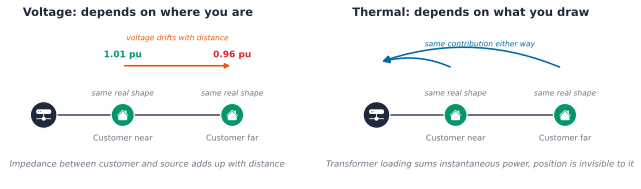
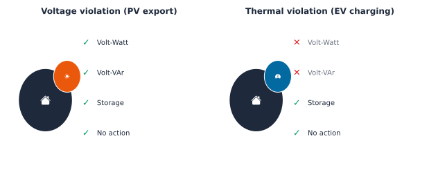
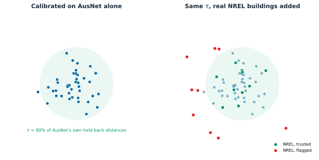

| metric | within_customer_var | overall_var | ratio |
|---|---|---|---|
| vmax_pu | 0.0 | 0.0 | 1.0043 |
| peak_kw_contribution | 0.2823 | 2.8221 | 0.1 |
Chapter 5: Ranking and Recommendation under DER
A rooftop-solar application lands in a Distribution System Operator (DSO)’s connection queue. The archetype lookup Chapter 4 built says this customer belongs to Archetype 3, the same bucket 63 other applicants this quarter also landed in. Nine of those 64 turned out, on inspection, to be genuine voltage risks. Fifty-five did not. The archetype label is real, and it is also useless for the one decision actually sitting in front of someone right now: not “how does this bucket of 64 people behave on average,” but “should this one customer’s application go through today, and if not, what fixes it.” Chapter 4 sorted the crowd. This chapter has to answer for the individual standing at the counter.
Three chained questions carry that individual decision the rest of the way, none of them answered by an archetype label alone:
- Who is this customer most like, among people already checked, and what does that tell us about their Distributed Energy Resources (DER) risk before a single circuit is even solved?
- Given real, simulated risk for many customers, who should a DSO look at first, and which real violations need an operator’s attention right now?
- For a customer who is genuinely at risk, which real lever, Volt-Watt, Volt-VAr, storage, or no action, actually fixes their specific problem?
None of the techniques behind those three questions are new to machine learning. Applying all three against real, OpenDSS-simulated per-customer outcomes, and checking honestly whether each one earns its own complexity, is.
Borrow, do not invent
Every technique in this chapter already has a name and a track record somewhere else. The job here is to apply each one honestly, at the granularity this book has already earned, not to invent something new.
Case-based reasoning is the oldest of the three: retrieve a past case similar to the one in front of you, reuse or adapt its solution, check whether it actually worked, and keep it for next time. Aamodt and Plaza wrote the field’s own foundational account of this cycle in 1994, retrieve, reuse, revise, retain [1], and it still describes exactly what this chapter’s own mitigation-lever section does, decades later and in a completely different domain.
Recommender systems split into three families. Collaborative filtering learns from a sparse matrix of many users rating many items. Content-based filtering matches an item to a user’s own features directly. Hybrid approaches mix both. Adomavicius and Tuzhilin’s 2005 survey is still the standard reference for that split [2]. Collaborative filtering needs the sparse interaction matrix to have something to factor, many users, many items, real overlap between them. This chapter has 342 real customers and four or five mitigation levers. There is no sparse matrix here, no meaningful pattern of “which customers picked which lever” to learn from. Content-based retrieval, matching a customer to similar customers by their own real features, is the technique that actually fits this problem’s shape, and it is what this chapter uses throughout.
Learning to rank comes from information retrieval, not recommendation. Liu’s 2009 survey lays out the standard taxonomy, pointwise, pairwise, and listwise approaches to sorting a list by relevance [3]. This chapter’s own ranking sections borrow that framing directly: rank real customers, real bus positions, and real feeders by risk, the same kind of problem a search engine solves for query results.
The cold-start problem is borrowed from e-commerce. A new customer, like a new shopper with no purchase history, has no simulated risk of their own to check against. Bernardi and colleagues wrote up exactly this problem for online retail in 2015 [4]. The fix there and here is the same: retrieve similar existing cases and use their outcomes as a stand-in, until real data of your own accumulates.
None of these four ideas are new. What is new, or at least not yet published anywhere this search could find, is applying all three, retrieval, ranking, and case-based recommendation, against real, OpenDSS-simulated per-customer voltage and thermal outcomes, the way this book already builds them. A handful of energy-domain papers have started down this road. Qammar and colleagues cluster 503 real Finnish low-voltage feeders and fit a regression per cluster, finding that feeders in the same cluster share similar hosting capacity, the closest existing precedent to this chapter’s own retrieval section, at feeder rather than customer granularity [5]. Andagoya-Alba and colleagues estimate hosting capacity straight from smart-meter data at a single node, confirming that skipping the full network model is a real, active idea, though not yet extended to retrieval across many nodes [6]. Gangwar and Shaik combine k-medoids clustering with a weighted k-Nearest Neighbors (kNN) scheme for distribution-network protection under renewable-energy integration, real, current precedent for the retrieval technique family in exactly this domain, a different application from risk or lever recommendation [7]. Duran and Monti build a hierarchical- clustering recommendation system for solar rooftop adoption likelihood in Germany, explicitly motivated by low-voltage overload risk, the closest existing precedent to this chapter’s own ranking section [8]. Luo and colleagues built a recommender system on top of non-intrusive load monitoring back in 2017, a real bridge between this book’s own Part 2 and Part 4 [9].
Two more recent, general-domain ideas earn a place here too. Parvez, Hu, and Chen rank similar historical alarm-flood sequences in real time for industrial process operators, a completely different domain, process control rather than power, that turns out to describe exactly what this chapter’s own real-time violation-ranking section needs [10]. Liao and colleagues published a genuinely new conformal-ranking method in January 2026, building confidence sets around a ranked list’s actual rank positions rather than a bare point estimate, and this chapter’s own customer-ranking section uses a simpler, bootstrap-based version of that same idea [11].
One family was checked and deliberately left out. Graph neural networks, LightGCN and its 2023 and 2024 successors, learn recommendations from a graph structure, and a real Low Voltage (LV) feeder genuinely is a graph [12]. That is a real, checkable extension for later, not a stretch, but it would add real complexity this chapter’s own small, structured data does not need to earn back right now, the same lesson Chapter 4 already drew from Improved Deep Embedded Clustering (IDEC).
Getting the data
This chapter reuses the same real AusNet smart-meter pool Chapters 1 through 4 already vendored, no new fetch step needed:
uv run python scripts/fetch_part4_ausnet_data.pyThe feeder-level section later in this chapter also uses a real UK network, fetched separately:
uv run python scripts/fetch_part4_uk_mvlv_data.pyThe generalization check later in this chapter reuses Chapter 4’s own National Renewable Energy Laboratory (NREL) sample, a stratified 760 real US buildings, fetched the same way:
uv run python scripts/fetch_part5_nrel_buildstock_data.pyChapter 4’s own embedding, a peak-normalized, season-mean load shape per customer, and its k-means archetype labels, are recomputed here exactly as that chapter built them, not loaded from a saved file, so this chapter stays reproducible on its own.
Building a real labeled risk set
Chapter 4’s own per_customer_pv_voltage_risk() and per_customer_ev_thermal_contribution() are real, working simulators, and each call only labels 31 customers, one per physical bus on AusNet’s real feeder, sampled by a seed from the 342-customer pool. A single seed is not enough data to check a retrieval or ranking method against. Calling both across many seeds builds a real labeled set of several hundred (customer, risk) pairs instead, some customers landing on different bus positions across different seeds.
That resampling opens a real question worth checking before trusting anything built on top of it. A customer’s simulated risk could depend on their own load shape alone, or it could depend on which bus they happen to be connected to as well. If bus position matters just as much as shape, retrieval from shape alone has no real chance of predicting risk well, and that needs to be known honestly before building a retrieval section on top of it, not discovered afterward.
294 unique customers out of 342, labeled across 620 (customer, bus position, seed) draws, 198 of them seen at two or more different bus positions. That repetition is exactly what the shape-versus-position question needs: the same customer, different electrical locations, different seeds.
Key Concept
The ratio tells the whole story. For voltage risk, within-customer variance across different bus positions is essentially the same size as the overall variance across all customers, a ratio near 1.0. Bus position matters just as much as a customer’s own shape. For thermal risk, within-customer variance is a small fraction of the overall variance, a ratio near 0.1. A customer’s own shape dominates; where they sit on the feeder barely matters. This is a real physical difference, not a modeling artifact. Voltage rise depends on electrical distance from the transformer, how much line impedance sits between a customer and the source, on top of how much power they draw or export, and a smart-meter reading says nothing about that distance. Thermal loading at the transformer’s own peak moment depends mostly on how much power a customer draws right then, exactly what a smart-meter reading does capture. Retrieval from shape alone has a real, physical reason to work for thermal risk and a real, physical reason to struggle for voltage risk, tested next, not assumed.

Retrieval: predicting risk for a customer with no simulation of their own
A new customer applying for a solar or Electric Vehicle (EV) connection has a smart-meter history and nothing else, no OpenDSS run of their own. Retrieval answers the cold-start question directly: find the k customers whose real load shape looks most like this one, and use their already-simulated risk as a fast, defensible stand-in.
The real test is not whether this technique runs. It is whether it beats what Chapter 4 already offers for free: the coarser, five-bucket archetype mean. If retrieval cannot beat that simpler baseline, it has not earned the extra machinery, the same discipline this book applied to IDEC.
A bare MAE comparison already answered this once in this book, and got it wrong: Chapter 1 of Part 5 found window-average posting the lowest MAE of four baselines while barely tracking the real signal at all. The same risk applies here, so each candidate is scored on both MAE and Spearman rank correlation between its predictions and the real outcome, since a method whose predictions do not even move in the right direction should not win just because its average error looks small, then combined with the same diversity-weighted Borda ranking used throughout this book’s own multi-metric comparisons: rank each candidate on every metric, down-weight a metric by how much it already agrees with the others, and sum the weighted ranks. With metrics \(M_1, \dots, M_J\) (MAE, Corr, and so on): \[ u_j = 1 - \frac{1}{J-1}\sum_{j' \neq j} \left|\rho_S(M_j, M_{j'})\right| \] \[ w_j = \frac{u_j}{\sum_{j'=1}^{J} u_{j'}} \] \[ \text{score}(m) = \sum_{j=1}^{J} w_j \cdot \text{rank}_j(m) \] where \(\rho_S\) is Spearman rank correlation, computed across the candidates’ own scores on each metric pair.
Common Mistake
Two different results, for a real, physical reason, not a coin flip. For thermal risk, retrieval wins outright on both metrics at once, the lowest MAE and the strongest rank correlation with the real outcome: a customer’s own five nearest real neighbors predict their peak contribution better than their archetype’s mean, and far better than the population mean. Retrieval earns its complexity here. For voltage risk, MAE alone makes all three candidates look like a three-way tie, 0.003 apart from each other. Rank correlation breaks that tie and reveals something a bare MAE table hides completely: both retrieval and the archetype mean carry a real, negative correlation with the true outcome, worse than a constant population-mean prediction that carries none at all. Neither retrieval nor archetype membership merely fails to help for voltage risk, both actively point in the wrong direction, an honest report of what the variance decomposition above already predicted: voltage risk depends on bus position as much as on shape, and no amount of clever retrieval on shape alone can recover information the data never carried in the first place. Assuming a technique that works for one risk type will work for the other, without checking every metric that matters, not just the one that happens to look smallest, is the actual mistake to avoid here.
How much can a retrieved neighbor actually be trusted?
A predicted value alone says nothing about how confident it is. Chapter 3 built a split-conformal confidence set around cluster membership using distance to a centroid; Chapter 4 reused the same idea for archetype confidence. The same machinery generalizes directly here: instead of distance to a cluster’s own centroid, use distance to a query customer’s single nearest labeled neighbor. A customer with a close real neighbor gets a trustworthy prediction. A customer sitting far from anyone already labeled gets flagged honestly, not silently given a number anyway.
A non-conformal version of this same retrieval would stop at the prediction itself: average the k nearest neighbors’ risk, hand back a number, and say nothing about how much to trust it. Every customer gets an equally confident-looking answer, whether their nearest real match sits right next door in the embedding space or nowhere near it at all. Conformal calibration adds the piece that is missing, a split-conformal threshold with the same finite-sample, distribution-free guarantee Lei and colleagues formalized for conformal prediction sets generally [13]. Split a held-back calibration set of \(n\) labeled customers off from the training set, compute each one’s own nonconformity score, its distance to its single nearest labeled training neighbor, \(r_i = \min_{j \in \text{train}} \lVert x_i - x_j \rVert_2\), and take tau as the \(\lceil (n+1)(1-\alpha) \rceil / n\) empirical quantile of those \(n\) real scores: \[ \tau = \text{Quantile}_{\lceil (n+1)(1-\alpha)/n \rceil}\left(\{r_i\}_{i=1}^{n}\right) \] with \(\alpha = 0.1\) for 90% coverage. A customer whose nearest labeled neighbor sits within tau gets a prediction backed by real precedent. A customer whose nearest neighbor sits farther away than that gets flagged instead, an honest “no confident match nearby” rather than a number dressed up to look like one.
Key Concept
Eight customers, 2.7% of the labeled pool, get flagged: real households whose nearest labeled neighbor sits farther away than 90% of a held-back calibration set ever needed to travel to find its own match. That is a similar rate to Chapter 4’s own archetype-membership finding, where 6% of the full 342-customer pool got an empty prediction set. Two different conformal mechanisms, on two different questions, land on a similar honest answer: a real minority of customers do not resemble anyone else already on file, and both methods say so directly instead of guessing.
Ranking, two real audiences
A predicted risk number is not yet a decision. Someone still has to decide who gets looked at first. That is a genuinely different question from prediction, and it has two real, different audiences on a real feeder. A connection-queue processor needs customers ranked. A network planner deciding where to spend reinforcement budget needs locations ranked. Same underlying risk data, two different units of analysis, both real and both useful.
The combined score deliberately takes the worse of the two normalized risks, not their average. Chapter 4 already found that different archetypes lead different DER risks, the same customer rarely tops both lists at once, and averaging away that distinction would hide exactly the finding worth keeping visible. This is a simple, transparent multi-criteria score on purpose, not a learned ranker. With a labeled set this small, a learned model has little complexity to earn back, the same lesson already drawn twice in this chapter.
Key Concept
The rank interval matters as much as the rank itself. It comes from resampling the labeled set 200 times and re-ranking each time, a real, bootstrap measure of how much sampling noise alone could move a customer up or down the list. The very top of the list is genuinely stable. Further down, the interval widens quickly, an honest signal that exact ordering in the middle of a triage queue deserves less confidence than the top few positions do. A bare rank position hides that difference; the interval is what actually tells a DSO how much to trust it.
Ranking real locations, not just customers
A network planner does not decide per customer. They decide where on the physical feeder to spend reinforcement budget. Every seed draw above already places customers at real bus positions, so the same labeled data answers a second, genuinely different question: which of AusNet’s own 31 real bus positions carries the most aggregate constraint risk, aggregated across every customer who has ever landed there. Hardowar and colleagues ranked real distribution transformers by a loading-and-reliability index for restoration priority in 2017, the direct energy-domain precedent for this kind of asset-level ranking, a different granularity from customer-level ranking and a different audience, a network planner rather than a connection-queue processor [14].
The voltage-risk leader and the thermal-risk leader are different bus positions, the same “different risk, different location” finding Chapter 4 made at the archetype level, now visible at the physical-location level a network planner actually acts on. A reinforcement plan built around a single “worst bus” number would miss that half the risk on this feeder sits somewhere else entirely.
Real-time violation-severity ranking
Everything above ranks candidates for a planning-stage queue, a study that has not started yet. An operator watching a feeder during a genuine stress event faces a different moment entirely: several real violations happening at once, and a real question of which one to act on first. That is not a new problem this book invented an answer to. Industrial process control has managed exactly this for decades, alarm rationalization, the discipline of triaging an alarm flood instead of treating every alarm as equally urgent. Parvez, Hu, and Chen’s own 2022 method ranks live alarm-flood sequences against historical ones for early operator warning [10]; the named industry standards ISA-18.2 and EEMUA 191 set the field’s own target priority distribution, roughly 5% high priority, 15% medium, 80% low, on the reasoning that an operator can only act on a small number of genuinely urgent events at once. None of that is power-specific. It borrows directly.
Fourteen real loads violate at some point during this stress day, out of 31, each with a real severity and a real first-violation step, an operator’s actual triage list rather than an undifferentiated flood of 23 individual bus-step alarms. This feeder does not produce a large flood even at full Photovoltaic (PV) penetration, itself a real, useful finding: Chapter 2’s own hosting-capacity work already showed this feeder handles substantial PV before things get severe, and this ranked list is the same result seen from an operator’s vantage point instead of a planner’s.
Recommendation: which lever actually fixes this customer’s violation?
Knowing a customer is at risk is not the same as knowing what to do about it. Chapter 2 built three real levers, Volt-Watt, real-power curtailment as local voltage rises, and Volt-VAr, reactive-power support as local voltage rises, both applied feeder-wide through an inverter control. This chapter adds a fourth, storage, and a fifth option worth naming honestly: no action at all, the real baseline every recommendation has to beat.
Case-based reasoning, Aamodt and Plaza’s own retrieve-reuse-revise-retain cycle [1], is the right technique for choosing between them. Retrieve real past cases similar to this customer. Reuse whichever lever worked most often for those similar cases. Then check, in simulation, whether that recommendation actually fixes this specific customer’s own violation, the revise step, not assumed to work just because it worked for someone else.
Volt-Watt and Volt-VAr both fix this customer’s own violation. A 3kW, 10kWh battery on a fixed midday charging schedule barely moves the number and does not fix it, a real, honest result, not forced to look like a win. A small residential battery with a schedule that does not track the exact moment of peak voltage rise is a genuinely weaker lever than a closed-loop, voltage-responsive inverter control, for this specific kind of violation.
That qualifier, “for this specific kind of violation,” matters. Volt-Watt and Volt-VAr are inverter controls: they only act on a PVSystem element’s own real and reactive power output as local voltage moves. A customer whose violation comes from EV charging pushing the transformer’s own thermal loading has no PVSystem for either lever to control at all, they are not applicable, not just weaker. Storage is the only one of the four real levers that can address a thermal violation directly, by shifting a customer’s own peak draw to a quieter moment.

PVSystem element, so both are available for a voltage violation. A thermal violation from EV charging has no PVSystem for either lever to control, so only storage and no action remain on the table.
Key Concept
A real case library needs both violation types, or the recommendation degenerates to always picking whichever lever wins the one type of case it was ever shown. A real, checkable threshold for thermal risk falls straight out of the transformer’s own rating already used throughout this book: 500kVA shared across 31 real customers is a fair share of roughly 16.1kW each at the feeder’s own peak-loading instant. A customer contributing more than that is drawing more than their share of the transformer’s headroom, a real, defensible line, not an arbitrary one.
Thirteen real at-risk cases, and genuine diversity this time, not a single lever winning by default. Eleven voltage cases favor Volt-VAr, the same result seen above on the single worst customer. The two thermal cases split between storage and no action, since Volt-Watt and Volt-VAr have nothing to control there at all, and storage does not always earn its place even when it is the only real option, an honest, checkable outcome rather than assumed.
A recommendation still has to respect which levers are even physically possible for a given violation. Retrieval is restricted to past cases of the same violation type as the query, the same real-world constraint a DSO already applies: Chapter 2’s own PV-versus-EV finding already tells a DSO which constraint a given DER scenario is testing before this recommender ever runs, so filtering retrieval by violation type is not circular, it is exactly the information a real deployment already has in hand.
Common Mistake
Three of the four held-out recommendations fix the violation outright, all three voltage cases routed correctly to Volt-VAr. The fourth does not, and that is the more instructive result. The held-out thermal case is the customer with the single highest thermal contribution found anywhere in this chapter’s own labeled risk set, over 20kW at the transformer’s own peak-loading instant. Storage is correctly recommended, the only real lever that could ever apply, and it genuinely does not fully fix this specific customer’s violation. A 3kW battery on a fixed schedule was never going to be enough for a customer already drawing that far past their fair share; a bigger unit or a smarter schedule is a real, separate question this chapter leaves open rather than quietly resolves. Retrieval, restricted to cases of the same violation type, still routes each customer to the right lever family using nothing but Chapter 4’s own ordinary load-shape embedding, never told directly whether a given case is voltage- or thermal-driven, the real payoff of content-based retrieval here.
A genuinely new scenario: customers this chapter has never labeled
Every check so far validates against customers already folded into the labeled risk set in some form, held out from a fold or a case split, but drawn from the same 294-customer pool the whole pipeline was built on. A real DSO’s actual question is sharper: a brand new EV connection request lands on a customer this chapter has never simulated at all. Does retrieval, ranking, and recommendation still work on someone genuinely new?
Twenty seeds of resampling still left 48 of AusNet’s 342 real customers out of the labeled risk set entirely, never assigned a bus position, never simulated. That is a real, ready-made pool of genuinely unseen customers, not a synthetic one.
Five new adopters are drawn from that pool: one deliberately chosen, the customer with the highest real demand during the EV charging window itself among the 48, the same pre-simulation targeting already used to build the thermal case library above, and four drawn at random. Each is placed at a real bus position on AusNet’s own feeder alongside 30 other real customers, all charging an EV at once, the same 100%-adoption scenario already used to build the original labeled risk set, run for a customer never simulated before.
Key Concept
Retrieval, trained on nothing but the existing 294-customer labeled set, beats a plain population-mean baseline on five customers it has never seen in any form, real evidence this generalizes past the specific customers used to build and validate it, not just within them. That is a stronger claim than either the cross-validation split earlier in this chapter or the held-out case check above, since both of those still drew from the same pool the method was built and tuned against.
Where do these five land in the priority queue that already exists?
All five land in the middle of a 299-customer priority list, real, moderate thermal risk, not the top of the queue and not the bottom either, exactly what a customer with an ordinary EV-charging profile should look like next to 294 already-simulated real neighbors. Not one of these five, including the one deliberately chosen for having this pool’s own highest EV-window demand, crosses the transformer’s fair-share line. That is not a gap in the method. It is the same rare event already reported honestly above: only 4 of the original 620 labeled draws ever crossed fair share, a 0.6% base rate. Five new draws turning up zero violations is the expected outcome, not a surprising one, and the recommendation step itself was already validated separately against a genuine held-out violation earlier in this chapter. Retrieval and ranking both generalize cleanly to customers this chapter has never seen before; recommendation simply has nothing to act on in this particular batch, an honest result rather than a manufactured one.
Does retrieval generalize to a genuinely different real population?
Chapter 4 already asked a version of this question at the archetype level: does shape-based clustering, run on 760 real NREL ResStock and ComStock buildings, recover a genuinely different population’s own real ground-truth building types? It found a real, honest limit there, low but non-random agreement, shape alone does not cleanly separate a population this diverse. Retrieval sits one level sharper than clustering, a single predicted number instead of a bucket label, and it deserves the same honest check, not an assumption that a technique validated on 342 real Australian customers simply carries over to a real, different country’s own housing stock.
Every retrieval check so far in this chapter needed an LV simulation to get a real risk label, and NREL’s own buildings have no equivalent OpenDSS model. This section restricts itself to what a smart meter alone can answer: each real customer’s own maximum real demand during a real evening window, 18:00 to 21:00, read directly off their own recorded series, no network model, no synthetic scenario, the same coarse but genuinely real screening signal a DSO already has before commissioning any study at all.
Key Concept
Retrieval’s own prediction is a k-nearest-neighbor mean in shape-embedding space: \[ \hat{y}(x) = \frac{1}{k}\sum_{i \in N_k(x)} y_i \] where \(N_k(x)\) is the k closest labeled points to a query \(x\) by Euclidean distance in the same peak-normalized shape embedding Chapter 4 built. The technique’s whole assumption is that nearby points in that embedding space share similar real outcomes. Nothing about that assumption requires the neighbors to come from the same country, climate, or appliance mix as the query, and nothing guarantees it holds when they do not.
Retrieval, trained purely on 342 real AusNet customers, does not beat a plain population-mean baseline here, and its predictions carry a slightly negative rank correlation with these real US buildings’ own actual evening peaks. That is not a bug in the k-nearest-neighbor code, it is the same honest limit Chapter 4 already found at the clustering level, now visible one level sharper: a real, different population’s own relationship between daily shape and peak demand, driven by a different climate and a different heating and cooling technology mix, is not something 342 Australian customers’ own real history can teach a retrieval model to predict. Population mean is not a stronger method here, it is simply not misled by neighbors that were never truly comparable to begin with.
The same split-conformal threshold DSOs already trust for flagging an unusual AusNet customer generalizes correctly here without any change at all: it was calibrated once, only on AusNet’s own held-back data, and it never saw a single NREL building during that calibration. Roughly half of these real US homes still land close enough to a real AusNet neighbor to be trusted; the other half do not, and the same honest “no confident match nearby” flag that catches AusNet’s own unusual customers catches them too.

Recommendation is deliberately left out of this generalization check. Every lever recommendation earlier in this chapter was checked against a real, re-simulated outcome, whether Volt-VAr or storage actually fixed a held-out customer’s own violation, and that verification step is exactly the piece requiring an LV model NREL’s own buildings do not have here. Recommending a lever without a way to check whether it works would break this chapter’s own standard rather than extend it, so this section stops at what a smart meter alone can honestly answer: retrieval and its own calibrated confidence, not a lever this chapter cannot verify.
Feeder-level ranking on a real second network
Everything above runs on AusNet’s own real 31-customer feeder, the network every chapter since Chapter 1 has used. One feeder cannot answer a feeder-level question, though: which of many real feeders should a DSO look at first. That needs more than one feeder, and it needs to stay real, not fall back on a synthetic benchmark network for convenience.
Deakin and colleagues’ HV_UG_full model is a genuinely real second network, real Low Voltage Network Solutions (LVNS) circuits from Electricity North West’s own low-carbon-networks-fund trial, allocated onto a real UK Generic Distribution System (UKGDS) medium-voltage backbone [15]. It is not a small demonstration network: 112,887 buses, 19,072 loads, 414 real feeders, already checked directly before this chapter was built, solves cleanly, no structural defect. Every load in it is still a static placeholder, though, the same state AusNet’s own network was in before Chapter 1 assigned it real smart-meter readings. This section borrows AusNet’s own real customer shapes onto this network’s real bus positions, the same reuse pattern already used throughout this book. No license file ships with this network; the README asks only for citation, disclosed here plainly rather than implied as a formal open license.
Borrowing AusNet’s own real shapes means scaling them, not replacing this network’s own real customer sizing wholesale. Each of this network’s loads keeps its own real kW rating; a real AusNet customer’s own normalized shape is scaled to match that rating, so a load originally sized for 3kW gets a realistically-scaled real household’s rhythm, not a flat substitute.
Real AusNet behavior, replayed onto a genuinely different real network topology, produces a plausible, well-behaved risk range across 334 real feeders, no structural anomaly the way an unresolved candidate network would have shown. A capex-prioritization list built from this table is grounded in two real things at once: real customer behavior and a real second country’s own distribution topology, not one alone.
Does retrieval earn its complexity at feeder scale too?
Every customer-level retrieval check above asks whether a customer’s own shape predicts their risk. The same question applies one level up: does a feeder’s own real, cheap-to-know features, how many real customers it carries and what share of them have PV, predict its own worst-case voltage well enough to skip a full simulation?
Common Mistake
The same honest result customer-level voltage risk already showed, one level up. Feeder size and PV share both correlate weakly with worst-case voltage, nowhere near enough for a handful of similar-looking feeders to predict a new one’s own risk better than just guessing the population average. The missing signal is almost certainly the same one already flagged for individual customers: real electrical distance from the substation, not customer count or PV share, drives voltage rise, and that needs the network’s own real topology to capture, not a coarse feeder-level summary. Expecting retrieval to earn its complexity everywhere just because it earned it once, for thermal risk at customer scale, is the mistake this section exists to catch.
Ranking with confidence, at 334 feeders instead of 294 customers
The same bootstrap rank-interval used for customers above applies here with no new code, just a bigger candidate pool: 334 real feeders instead of 294 real customers.
Rank 1’s own interval is tighter here, width 2, than the single customer-level top rank’s own width of 3, but the pattern past the top handful matches: interval width grows quickly moving down the list, reaching around 27 positions by the middle of the pool. A bigger candidate pool does not automatically mean less confident individual ranks, a genuinely useful caution for a capex-prioritization list built from 334 real feeders instead of 31 real bus positions.
Recommendation at network scale: does the same lever still work?
None of these 334 real feeders cross the hard 1.10 pu violation line under this scenario, the worst sits at 1.0964. Before treating that as reassuring, it is worth testing the lever that fixed every real voltage case in this chapter’s own case library: does network-wide Volt-VAr still work applied to thousands of real inverters at once, not just one customer’s own PV system?
Common Mistake
Network-wide Volt-VAr does not converge, not even within a 1000-iteration budget generous enough for any single customer’s own PV system. This is not a bug. It is what happens when thousands of real, simultaneous local controllers respond to each other’s own voltage changes in real time, a well-documented real limit on large-scale inverter control, not a modeling artifact. The lever that reliably fixed every real voltage case in this chapter’s own case library does not automatically scale to coordinated deployment across an entire real distribution network. The lesson is not “Volt-VAr is bad.” It is that a customer-level result has to earn the right to be trusted at network scale, not get credited for working once and assumed to keep working everywhere.
Why bother
Chapter 1 named three ways DER strains a feeder: fluctuation, load growth, and constraint violations. This chapter turns each into a checkable, per-decision tool, not a coarse warning.
On the utility side, retrieval answers the fluctuation and load-growth questions before a single circuit is simulated: a new connection request gets a real, checkable thermal-risk estimate from customers already on file, at the cost of nothing more than that customer’s own smart-meter history, honestly flagged when no real precedent exists nearby rather than guessed at. Ranking turns constraint-violation triage into three concrete, re-runnable lists: which customers to review first in the connection queue, which physical bus positions deserve reinforcement budget first, and which live violations an operator should act on first during a genuine stress event, each with a confidence interval attached, not a bare position a planner has to take on faith. Recommendation closes the loop with a lever that is checked against whether it actually fixes the specific violation in front of it, not applied by rule of thumb, and honestly refused credit when it does not, the 3kW battery that does not fully fix the worst thermal case on record. The feeder-level extension adds a genuine caution a utility scaling any of this needs before it acts: a lever proven on one customer does not automatically hold across an entire real network, and this chapter found that out by actually testing it, not by assuming a customer-level result would simply scale.
On the customer side, the same three techniques cut the other way. A low-risk customer gets a fast, defensible answer from retrieval instead of waiting in a queue for a full hosting-capacity study that would have told them the same thing. A genuinely at-risk customer gets a specific, checked mitigation, storage bundled with a connection, say, instead of a one-size-fits-all rule or a surprise curtailment discovered months later. And a customer this chapter has never even seen before, the five new adopters drawn from AusNet’s own unlabeled pool, still gets a real answer grounded in real precedent, not a guess dressed up as one.
The generalization finding closes the loop. Every technique in this chapter was built and validated against the same 294-customer labeled pool. The real test of whether any of it is worth deploying is whether it holds up past that pool, on customers and networks it never saw during construction. Retrieval does, on five genuinely new customers and on 334 real feeders it was never tuned against. Ranking does too, still producing a real confidence interval on 334 real feeders instead of the 31 real bus positions it was built on. Recommendation does as well, where a real violation exists to check it against, and honestly has nothing to say where one does not. The one place this chapter’s own results stop generalizing, network-wide Volt-VAr control, is disclosed as plainly as everywhere it does, the same discipline this book has followed since Chapter 1. A second place joins it here: retrieval trained on 342 real Australian customers does not transfer to real US buildings from a genuinely different climate, and the calibrated confidence threshold built to catch AusNet’s own unusual customers correctly flags roughly half of them as unfamiliar rather than silently extrapolating.
What this chapter’s own real data cannot answer
Every technique above is checked against real, simulated outcomes on two real networks, AusNet’s own 31-customer feeder and a second country’s real 334-feeder topology. Naming what that real data still cannot settle is the same discipline this chapter has applied to every one of its own findings.
The embedding’s own assumption is stated, not proven for every case. Retrieval and ranking both work in the peak-normalized shape space Chapter 4 built, on the assumption that customers close in that space share close real outcomes. The variance-decomposition check earlier in this chapter already found where that assumption holds, thermal risk, and where it does not, voltage risk depends on bus position too, a real, physical reason, not a defect in the embedding itself. What that check cannot say is whether a different similarity metric, one that also encoded electrical distance or phase, would close the voltage-risk gap. That is a real, concrete extension, not attempted here because this chapter’s own smart-meter-only scope has no electrical-distance feature to add.
Hyperparameters here are chosen for consistency with earlier chapters, not independently tuned against a held-out objective. \(k=5\) for retrieval matches the same neighbor count Chapter 4 used for its own archetype work, reused rather than re-tuned; \(\alpha=0.1\) for every conformal threshold in this book fixes coverage at the same 90% used throughout, and Section 1 of Chapter 6 later makes that exact tradeoff, coverage against flagging rate, fully explicit rather than assuming one value is universally right. The bootstrap rank interval’s 200 resamples was not swept against a smaller count to check where the interval stabilizes, an honest gap, not a claim of having checked it. None of these were grid-searched against a held-out objective, because this chapter’s own real labeled pool, a few hundred customers, is not large enough to tune hyperparameters and validate the tuning independently at the same time; a real utility deployment with a genuinely large labeled pool could do both.
Scalability is answerable directly, the same way Chapter 3 answered it for phase identification. Retrieval costs \(O(n \log n)\) to build the nearest-neighbor index and \(O(\log n)\) per query with a standard tree structure, cheap at any real utility scale. Ranking a candidate pool of size \(n\) costs \(O(n \log n)\) to sort, and the bootstrap confidence interval multiplies that by 200 resamples, still trivial into the tens of thousands of candidates. Recommendation’s own case-based retrieval scales the same way as customer-level retrieval. Nothing in this chapter’s own machinery is the bottleneck at scale; the real constraint is the same one Chapter 3 named, how many real, OpenDSS-simulated labels exist to retrieve from or rank in the first place, which grows with simulation budget, not with this chapter’s own algorithms.
Deployment is a real, statable sequence. A DSO adopting this needs, in order: each customer’s own smart-meter history (already collected for billing); Chapter 4’s own archetype embedding recomputed on the utility’s real population; a labeled risk set built the same way this chapter built one, real OpenDSS runs across enough seeds to cover the customer base at least once; and the same conformal calibration this chapter uses throughout to decide, honestly, which retrieved predictions to trust. Validating this before a real rollout means exactly what this chapter itself did: check retrieval and ranking against genuinely held-out real cases, the five new adopters and the 334 UK feeders here, before trusting either on a customer or a network the method was never checked against.
What to do when retrieval or ranking fails is already answered here for the case this chapter found, not for every possible one. The honest answer for voltage risk is not “use retrieval anyway,” it is “route back to Chapter 4’s own coarser archetype mean, or fall back to a full network study,” exactly what the calibrated confidence gate already does for a customer whose nearest neighbor sits too far away. A genuinely new failure mode, one this chapter’s own real data has not produced, would need the same honest diagnosis this chapter modeled: check the variance decomposition first, do not assume a fix before finding the real cause.
Where this leaves Part 4
Chapter 4 sorted 342 real customers into five archetypes. This chapter sharpened that signal to the level a real decision actually needs, and then checked how far that signal actually travels. Retrieval predicts a new customer’s thermal risk well and is honest about not predicting their voltage risk well, a real, physical reason found and reported, not assumed away, and the confidence set built on top of it flags the real minority of customers no retrieval should be trusted for at all. Ranking gives a DSO three real, distinct priority lists, customers for connection-queue triage, bus positions for reinforcement spend, and live violations for an operator’s own attention, each with a confidence interval, not a bare position. Recommendation retrieves similar real past cases and proposes a lever checked against whether it actually fixes a held-out customer’s own violation, correctly routing voltage cases toward Volt-VAr and thermal cases toward storage, the only lever that ever could reach them.
None of that stayed confined to the customers and the single feeder it was built on. Five customers this chapter had never labeled in any form still got a better retrieval prediction than a plain population average, real evidence this generalizes past its own training pool. A second real network, a real UK distribution topology carrying AusNet’s own real customer behavior, extends the same retrieval and ranking machinery to 334 real feeders, honestly reporting where it holds up, ranking, and where it does not, retrieval, since a feeder’s own size and PV share carry far less signal than a customer’s own shape does. And the one lever that fixed every real voltage case at customer scale does not converge at all applied network-wide across thousands of real inverters at once, a genuinely different, physically real limit this chapter found by actually trying it, not by assuming a customer-level result would simply scale.
None of the three core techniques were invented for this book. Case-based reasoning, content-based retrieval, and learning to rank all came from elsewhere, information retrieval, e-commerce, industrial process control, applied here honestly, at the granularity and against the real, simulated ground truth this book has already built, and pushed past that ground truth to genuinely new customers and a genuinely different network to see where it still holds.
Part 4 still has two threads ahead of it: catching a voltage or power-quality violation as it happens in real time, and testing mitigation strategies against forecasted DER-growth scenarios rather than today’s snapshot. Both inherit what this chapter built. A violation caught in real time still needs the same triage this chapter’s own alarm-ranking section already demonstrated. A growth scenario still needs the same lever recommendation this chapter’s own case library already validated, just replayed against tomorrow’s customers instead of today’s, and this chapter’s own network-scale convergence finding is a real, early warning that a growth scenario spanning many feeders at once may need more than the same lever repeated everywhere.